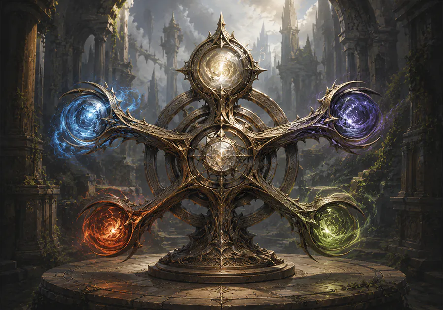

HTML in Canvas が有効なブラウザで表示してください

, ：あなたは3点のライフを得る。または、いずれかの対象が受ける次のダメージを3点軽減する。 , ：カードを3枚引く。 , ：あなたのエネルギープールにを加える。 , ：任意の対象1つに3点のダメージを与える。 , ：対象1体はターン終了時まで+3/+3を得る。 “未来は無数に枝分かれする。だが、そのすべてを見通す者はほとんどいない。”
★ Rare
Illus. Chat GPT